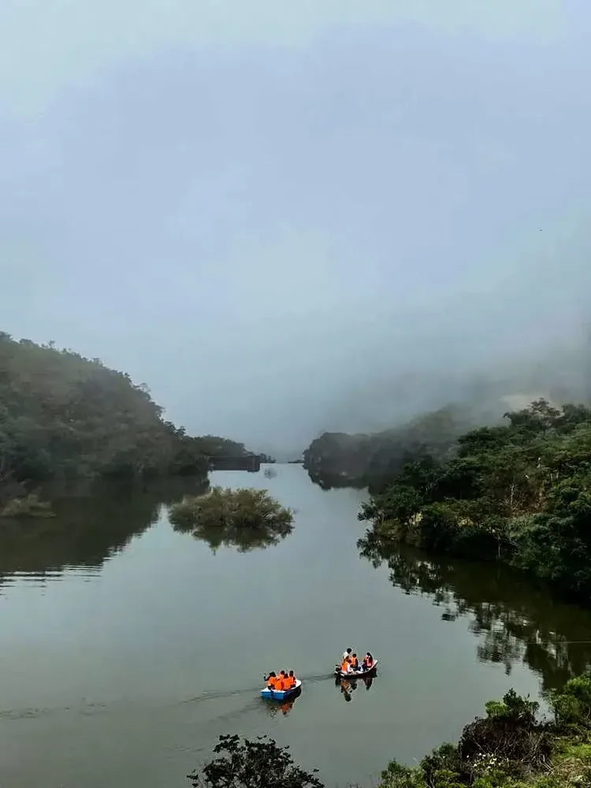

LOJANOVA 16/16 · Provincia de LojaReseña histórica · consultar fuente oficial ↗Territorio y producción · Prefectura ↗Descubre su oferta ↓
Quilanga
Raíces entre valles
Historia e identidad
Quilanga obtuvo su condición de cantón en 1989. Sus festividades y costumbres mantienen vivo un legado cultural ligado a la historia regional. El café y las frutas tropicales forman parte de su producción.
Su oferta en Lojanova
Estamos consultando los productos y categorías publicados de este cantón.

—Productos publicados
—Productores publicados
—Categorías con productos
Hecho en Quilanga
Descubre sus productos.
Consultando la oferta publicada…